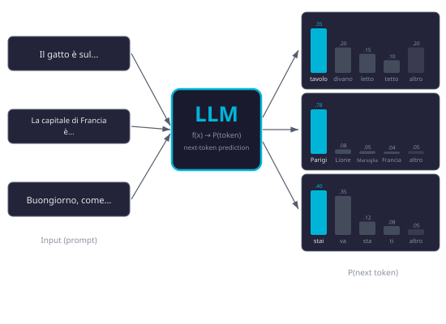

Un LLM è una funzione matematica che, data una sequenza di token, produce una distribuzione di probabilità sul prossimo token.
- Input: una sequenza di token — le unità in cui l'LLM "vede" il testo, approssimativamente parole o frammenti di parole.
- Output: una distribuzione di probabilità che assegna un valore a ogni token del vocabolario (decine di migliaia di possibilità).
- Nessun concetto di "conversazione": a questo livello l'LLM non sa di parlare con qualcuno. È una funzione che completa testo plausibile.
